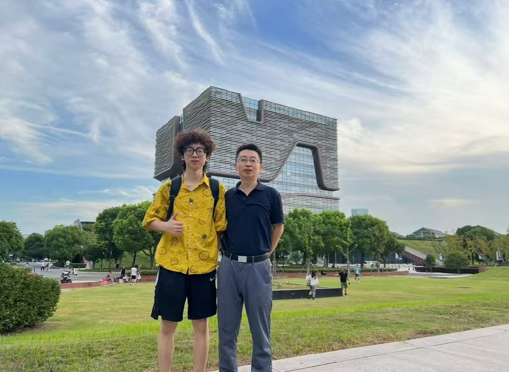
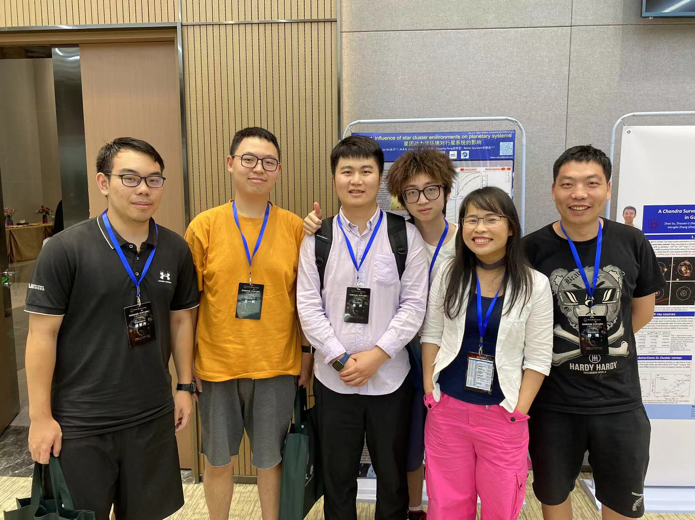

This gallery showcases memorable moments from my undergraduate studies in pure mathematics, including academic events, seminar participations, and campus life at Xi'an Jiaotong-Liverpool University.
June 2024
Presenting my work on analytic number theory at the XJTLU Summer Undergraduate Research Fellowships program.
October 2023
Collaborating with Professor Xiaoying Pang on data-driven analysis of stellar cluster formation using Gaia DR3 data.